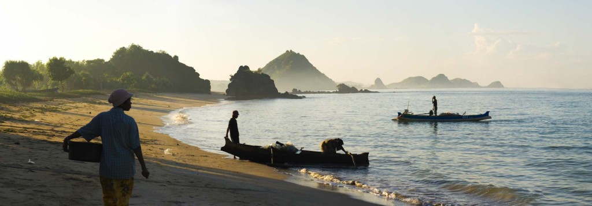

Extreme Earthlings
Travel Agency
Japan
Indonesia
Italy
New Zealand

Indonesia
Cities
Denpasar
Surabaya
Medan
Semarang
Landmarks
Lorentz National Park
Prambanan Temple Compounds
Tropical Rainforest Heritage of Sumatra
Fort Belgica
Famous Citizens
Gusmiatis Suid, choreographer
Garin Nugroho, film director
Raffi Ahmad, comedian
Jolene Marie Rotinsulu, Miss Indonesian International